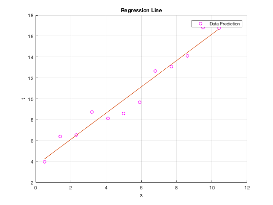

Contents
Question 1
load('linreg.mat');
Part A
In order to prove the solution for the linear regression is given by w* we first have to set the variable X to create the comlumns of 1's so the matrix can be equivalent to w.
X = [ones(length(x),1) x] % The variable w is the model for the linear regression which is define % here below in coding w = ((X.')* X)^(-1)*(X.')*t
X =
1.0000 0.5000
1.0000 1.4000
1.0000 2.3000
1.0000 3.2000
1.0000 4.1000
1.0000 5.0000
1.0000 5.9000
1.0000 6.8000
1.0000 7.7000
1.0000 8.6000
1.0000 9.5000
1.0000 10.4000
w =
3.6171
1.2560
Part B
We would plot the data with our linear regression model shown Plot the linear regression, the variable y is created so that the line can appear on the graph. The title of the graph and the labels also appears below
y = (w.')*(X.') figure; scatter(x,t,'m') hold on plot(x,y) legend('Data Prediction') grid on title('Regression Line') xlabel('x') ylabel('t')
y =
Columns 1 through 7
4.2451 5.3754 6.5058 7.6362 8.7665 9.8969 11.0273
Columns 8 through 12
12.1576 13.2880 14.4183 15.5487 16.6791
 Part C
This part would show how to estimate the variance of the difference between the prediction and actual targets. The N and D variables are to hold
[N,D] = size(x) % This line of code is for the variance % The estimate of the variance makes sense because the result is from the % linear regression equation, which includes the predictions that gives us % the estimate. var = (1/12) * sum((t-(y.')).^2)
N =
12
D =
1
var =
0.6927